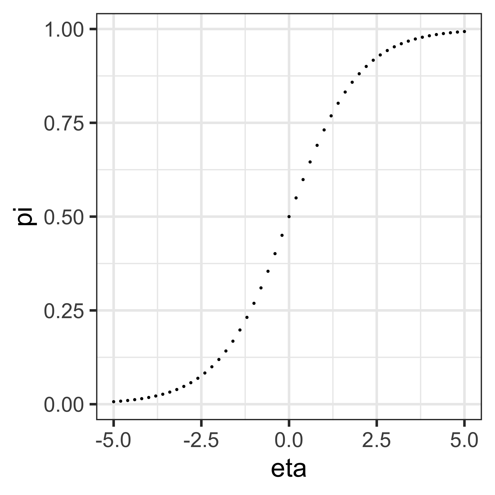

Classification & clustering methods
BSMM8740-2-R-2024F [WEEK - 5]
L.L. Odette
Recap of last week
Last time we introduced the Tidymodels framework in R
We showed how we can use the Tidymodels framework to create a workflow for data prep, feature engineering, model fitting and model evaluation.
Today we look at the using the Tidymodels package to build classification and clustering models.
Classification Methods
Classification
- Classification is a supervised machine learning method where the model tries to predict a categorical outcome for given input data.
- These models are essential in various business applications, such as credit scoring, customer segmentation, fraud detection, and more. Classification methods can broadly be categorized into two types: eager learners and lazy (instance-based) learners.
Eager Learners
Eager learners are machine learning algorithms that first build a model from the training dataset before making any prediction on future datasets. They spend more time on the training process to better generalize from the data.
They usually require less time to make predictions.
Eager Learners
Example eager learners are:
Logistic Regression:
- Overview: A statistical method for binary classification that models the probability of a binary outcome based on one or more predictor variables.
- Advantages: Simple, interpretable, and works well with linear decision boundaries.
- Disadvantages: Assumes linearity between predictors and the log-odds of the outcome.
Decision Trees:
- Overview: A model that splits the data into subsets based on feature values, resulting in a tree structure where each leaf node represents a class label.
- Advantages: Easy to interpret and visualize, handles both numerical and categorical data.
- Disadvantages: Prone to overfitting, especially with deep trees.
Random Forests:
- Overview: An ensemble method that builds multiple decision trees and aggregates their predictions to improve accuracy and reduce overfitting.
- Advantages: Robust to overfitting, handles large datasets well.
- Disadvantages: Less interpretable than single decision trees.
Support Vector Machines (SVM):
- Overview: A model that finds the hyperplane that best separates the classes in the feature space.
- Advantages: Effective in high-dimensional spaces, works well with a clear margin of separation.
- Disadvantages: Computationally intensive, less effective with noisy data or overlapping classes.
Neural Networks:
- Overview: Models inspired by the human brain, consisting of layers of interconnected neurons that learn to map inputs to outputs.
- Advantages: Capable of capturing complex patterns and relationships.
- Disadvantages: Requires large amounts of data and computational power, less interpretable.
Gradient Boosting Machines (GBM):
- Overview: An ensemble technique that builds trees sequentially, where each new tree corrects errors made by the previous ones.
- Advantages: High accuracy, effective at handling various data types.
- Disadvantages: Computationally intensive, requires careful tuning.
Lazy Learners
Lazy learners or instance-based learners, do not create any model immediately from the training data, and this where the lazy aspect comes from. They just memorize the training data, and each time there is a need to make a prediction, they predict based on similarity between the query instance and stored instances.
Lazy Learners
Example lazy learners are:
k-Nearest Neighbors (k-NN):
- Overview: Predicts the class of a query instance based on the majority class among its k nearest neighbors in the training data.
- Advantages: Simple, intuitive, and effective for small datasets.
- Disadvantages: Computationally intensive during prediction, performance degrades with high-dimensional data.
Case-based Learning:
- Overview: Makes predictions by fitting simple models (like linear regression) to localized regions of the data.
- Advantages: Flexible, can adapt to complex patterns locally.
- Disadvantages: Computationally expensive, sensitive to the choice of kernel and bandwidth parameters.
Comparing Eager and Lazy Learners
- Training vs. Prediction Time:
- Eager learners invest time in building the model during training, resulting in faster predictions.
- Lazy learners have negligible training time but are computationally intensive during prediction.
- Model Interpretability:
- Eager learners like decision trees and logistic regression are generally more interpretable.
- Lazy learners like k-NN are less interpretable as they rely on instance-based comparisons.
Comparing Eager and Lazy Learners
- Handling of High-Dimensional Data:
- Eager learners like SVMs and neural networks can handle high-dimensional data effectively.
- Lazy learners like k-NN can struggle with the curse of dimensionality.
- Flexibility and Complexity:
- Eager learners can capture complex relationships and interactions through models like neural networks and gradient boosting.
- Lazy learners are simpler but can be flexible in capturing local patterns.
Types of classification
- Binary classification
- Multi-Class Classification (mutually exclusive)
- Multi-Label Classification (not mutually exclusive)
- Imbalanced Classification
Binary Logistic Regression
Logistic regression is a Generalized Linear Model where the dependent (categorical) variable \(y\) is binary, i.e. takes values in \(\{0,1\}\) (e.g., yes/no, success/failure).
This can be interpreted as identifying two classes, and logistic regression provides a prediction for class membership based on a linear combination of the explanatory variables.
Logistic regression is an example of supervised learning.
Binary Logistic Regression
For the logistic GLM:
- the distribution of the observations is Binomial with parameter \(\pi\equiv\mathbb{P}(\left.Y=1\right|\eta)\)
- the explanatory variables are linear in the parameters: \(\eta=\beta_0+\beta_1 x_1+\beta_2 x_2+\beta_2 x_2\ldots+\beta_n x_n\)
- the link function is the logit: \(\eta=\text{logit}(\pi) = \log(\frac{\pi}{1-\pi})\)
It follows that \(\pi = \frac{e^\eta}{1+e^\eta} = \frac{1}{1+e^{-\eta}}\), which is a sigmoid function in the explanatory variables. The equation \(\eta=0\) defines a linear decision boundary or classification threshold.
Binary Logistic Regression
\[\begin{align*} \pi & =\frac{1}{1+e^{-\eta}}\;\text{(logistic function)}\\ \log\left(\frac{\pi}{1-\pi}\right) & =\log\left(\frac{\frac{1}{1+e^{-\eta}}}{1-\frac{1}{1+e^{-\eta}}}\right)\\ & =\log\left(\frac{\frac{1}{1+e^{-\eta}}}{\frac{e^{-\eta}}{1+e^{-\eta}}}\right)=\log\left(e^{\eta}\right)=\eta \end{align*}\]
Binary Logistic Regression
The term \(\frac{\pi}{1-\pi}\) is called the the odds-ratio. By its definition:
\[ \frac{\pi}{1-\pi}=e^{\beta_0+\beta_1 x_1+\beta_2 x_2+\beta_2 x_2\ldots+\beta_n x_n} \]
So if \(x_1\) changes by one unit (\(x_1\rightarrow x_1+1\)), then the odds ratio changes by \(e^{\beta_1}\).
Binary Classifier metrics
Confusion matrix
The confusion matrix is a 2x2 table summarizing the number of correct predictions of the model (a function of the decision boundary): It is the foundation for understanding other evaluation metrics.
| predict 1 | predict 0 | |
|---|---|---|
| data = 1 | true positives (TP) | false negatives (FN)1 |
| data = 0 | false positives (FP)2 | true negatives (TN) |
Binary Classifier metrics
Accuracy - the simplest metric:
Accuracy measures the percent of correct predictions:
\[ \begin{align*} \frac{\text{TP}+\text{TN}}{\text{observation count}} \end{align*} \]
Binary Classifier metrics
Accuracy:
Accuracy is a useful metric in evaluating classification models under certain conditions:
Balanced Datasets: When the classes in the dataset are roughly equal in number, accuracy can be a reliable indicator of model performance. For example, if you have a dataset where 50% of the samples are class A and 50% are class B, accuracy is a good measure of whether the model correctly predicts the classes.
General Performance: For an overall sense of a model’s performance, accuracy provides a straightforward, easy-to-understand measure, giving the proportion of correct predictions out of all predictions made.
Accuracy has several limitations, especially in the context of imbalanced datasets:
Imbalanced Datasets:
- False Sense of Performance: When one class significantly outnumbers the other, accuracy can be misleading: if 95% of the samples belong to class A and only 5% to class B, always predicting class A will have a high accuracy (95%) but may fail to correctly identify any instances of class B.
Ignoring Class Importance:
- Precision and Recall: Accuracy does not take into account the importance of different classes or the costs of different types of errors (false positives and false negatives). In many business contexts, these costs are not equal, e.g., in medical diagnosis, a false -ve might be much more serious than a false +ve.
Lack of Insight into Model Behavior:
- Detailed Performance: Accuracy give no insight into the types of errors the model is making. Precision and recall, on the other hand, offer more detailed information about the performance on individual classes - crucial for understanding and improving the model.
Binary Classifier metrics
Accuracy: examples of limitation
Fraud Detection:
- Scenario: Suppose you have a dataset with 1,000 transactions, of which 990 are legitimate and 10 are fraudulent. A model that always predicts “legitimate” will have an accuracy of 99% but fails to identify fraudulent transactions, making it useless for fraud detection purposes.
Spam Detection:
- Scenario: Consider an email classification problem where 95% of emails are legitimate and 5% are spam. A model that always predicts “legitimate” will have high accuracy but will not catch any spam emails, which is the primary goal.
Binary Classifier metrics
Precision
Precision measures the percent of positive predictions that are correct (true positives / all positives predicted):
\[ \frac{\text{TP}}{\text{TP}+\text{FP}} \]
Binary Classifier metrics
Recall / Sensitivity
Measures the success at predicting the first class (true positives predicted / actual positives):
\[ \frac{\text{TP}}{\text{TP}+\text{FN}}\qquad\text{(True Positive Rate - TPR)} \]
Recall / Specificity
Measures the success at predicting the second class (true negatives predicted / actual negative):
\[ \frac{\text{TN}}{\text{TN}+\text{FP}}\qquad\text{(True Negative Rate - TNR)} \]
Binary Classifier metrics
Receiver Operating Characteristic (ROC) curve & the Area Under the Curve (AUC)
ROC Curve: Plot of the true positive rate (Recall) against the false positive rate (1 - Specificity) at various threshold settings.
AUC: The area under the ROC curve, representing the probability that the model ranks a randomly chosen positive instance higher than a randomly chosen negative instance.
- AUC values range from 0.5 (no discrimination) to 1 (perfect discrimination).
Binary Classifier metrics
ROC Curves
Consider plotting the TPR against the FPR (1-TNR) at different classification thresholds.
- the diagonal (TPR = 1-TNR) describes a process equivalent to tossing a fair coin (i.e. no predictive power)
- our method should have a curve above the diagonal; which shape is better depends on the purpose of our classifier.
So, how to compute?
Example: create the workflow
Workflow to model credit card default
Code
> data <- ISLR::Default %>% tibble::as_tibble()
> set.seed(8740)
>
> # split data
> data_split <- rsample::initial_split(data)
> default_train <- rsample::training(data_split)
>
> # create a recipe
> default_recipe <- default_train %>%
+ recipes::recipe(formula = default ~ student + balance + income) %>%
+ recipes::step_dummy(recipes::all_nominal_predictors())
>
> # create a linear regression model
> default_model <- parsnip::logistic_reg() %>%
+ parsnip::set_engine("glm") %>%
+ parsnip::set_mode("classification")
>
> # create a workflow
> default_workflow <- workflows::workflow() %>%
+ workflows::add_recipe(default_recipe) %>%
+ workflows::add_model(default_model)Example: fit the model using the data
> # fit the model
> lm_fit <-
+ default_workflow %>%
+ parsnip::fit(default_train)
>
> # augment the data with the predictions using the model fit
> training_results <-
+ broom::augment(lm_fit , default_train)
>
> training_results %>% dplyr::slice_head(n=6)# A tibble: 6 × 7
.pred_class .pred_No .pred_Yes default student balance income
<fct> <dbl> <dbl> <fct> <fct> <dbl> <dbl>
1 No 0.998 0.00164 No No 759. 45774.
2 No 1.00 0.000145 No Yes 452. 19923.
3 No 0.770 0.230 Yes No 1666. 30070.
4 No 1.00 0.000256 No No 434. 57146.
5 No 1.00 0.000449 No No 536. 32994.
6 No 0.973 0.0269 No No 1252. 32721.Example: compute the AUC
Binary Classifier
Classification Threshold
Recall:
- In binary classification, the model predicts the probability of an instance belonging to the positive class. The classification threshold is the probability value above which an instance is classified as positive.
- Commonly, this threshold is set at 0.5, meaning any instance with a predicted probability above 0.5 is classified as positive, and below 0.5 as negative.
Binary Classifier
Classification Threshold Impact
True Positives (TP) and False Positives (FP):
- Lower Threshold: A lower threshold increases the number of instances classified as positive, which increases both true positives and false positives.
- Higher Threshold: A higher threshold decreases the number of instances classified as positive, which decreases both true positives and false positives.
True Negatives (TN) and False Negatives (FN):
- Lower Threshold: A lower threshold decreases the number of instances classified as negative, which decreases both true negatives and increases false negatives.
- Higher Threshold: A higher threshold increases the number of instances classified as negative, which increases true negatives and decreases false negatives.
Trade-offs:
- Adjusting the threshold affects the trade-off between sensitivity (recall) and specificity. A lower threshold improves sensitivity but reduces specificity, and vice versa.
Binary Classifier
ROC Curve and AUC
- ROC Curve:
- The ROC curve plots the true positive rate (TPR, or recall) against the false positive rate (FPR) at various threshold settings.
- Each point on the ROC curve represents a TPR/FPR pair corresponding to a specific threshold.
- AUC (Area Under the Curve):
- The AUC represents the model’s ability to discriminate between positive and negative classes across all threshold values.
- A higher AUC indicates better overall performance.
Binary Classifier: optimal threshold
- Business Context:
- The optimal threshold depends on the specific costs of false positives and false negatives in the business context. For example, in fraud prediction, the cost of missing a positive case (false negative) might be much higher than a false alarm (false positive).
- Maximize Specific Metrics:
- You can choose a threshold that maximizes a specific metric such as F1 score, which balances precision and recall.
- Alternatively, you might want to maximize precision, recall, or minimize a cost function that accounts for both false positives and false negatives.
- Youden’s Index:
- One method to select an optimal threshold is to maximize Youden’s Index (\(J\)), which is defined as: \(J=\mathrm{Sensitivity}+\mathrm{Specificity}-1\)
- This index helps to find a threshold that maximizes the difference between true positive rate and false positive rate.
- Cost-Benefit Analysis:
- Perform a cost-benefit analysis by assigning costs to false positives and false negatives and choosing the threshold that minimizes the total expected cost.
Binary Classifier: threshold examples
Example Scenario
Fraud Detection: - In fraud detection, missing a fraudulent transaction (false negative) might be more costly than flagging a legitimate transaction as fraud (false positive). - You might choose a lower threshold to ensure higher sensitivity (recall), even if it means a higher false positive rate, thereby catching more fraudulent transactions.
Conclusion
The choice of classification threshold in computing the ROC curve is crucial for balancing the trade-offs between sensitivity and specificity, and ultimately for optimizing the model’s performance in a way that aligns with business goals and context. Understanding and carefully selecting the appropriate threshold ensures that the model’s predictions are most useful and cost-effective for the specific application.
Other Classification Methods
Naive Bayes Classification
Bayes Rule - using the rules of conditional probability:
\[ \mathbb{P}(A,B) = \mathbb{P}(A|B)\mathbb{P}(B) = \mathbb{P}(B|A)\mathbb{P}(A) \] We can write:
\[ \mathbb{P}(B|A) = \frac{\mathbb{P}(A|B)\mathbb{P}(B)}{\mathbb{P}(A)} \]
Naive Bayes Classification
This method starts with Bayes rule:
for \(K\) classes and an observation \(x\) consisting of \(N\) features \(\{x_1,\ldots,x_N\}\), since \(\mathbb{P}\left[\left.C_{k}\right|x_{1},\ldots,x_{N}\right]\times\mathbb{P}\left[x_{1},\ldots,x_{N}\right]\) is equal to \(\mathbb{P}\left[\left.x_{1},\ldots,x_{N}\right|C_{k}\right]\times\mathbb{P}\left[C_{k}\right]\), we can write
\[ \mathbb{P}\left[\left.C_{k}\right|x_{1},\ldots,x_{N}\right]=\frac{\mathbb{P}\left[\left.x_{1},\ldots,x_{N}\right|C_{k}\right]\times\mathbb{P}\left[C_{k}\right]}{\mathbb{P}\left[x_{1},\ldots,x_{N}\right]} \]
Naive Bayes Classification
If we assume that the features are all independent we can write Bayes rule as
\[ \mathbb{P}\left[\left.C_{k}\right|x_{1},\ldots,x_{N}\right]=\frac{\mathbb{P}\left[C_{k}\right]\times\prod_{n=1}^{N}\mathbb{P}\left[\left.x_{n}\right|C_{k}\right]}{\prod_{n=1}^{N}\mathbb{P}\left[x_{n}\right]} \]
and since the denominator is independent of \(C_{k}\), our classifier is
\[ C_{k}=\arg\max_{C_{k}}\mathbb{P}\left[C_{k}\right]\prod_{n=1}^{N}\mathbb{P}\left[\left.x_{n}\right|C_{k}\right] \]
Naive Bayes Classification
So it remains to calculate the class probability \(\mathbb{P}\left[C_{k}\right]\) and the conditional probabilities \(\mathbb{P}\left[\left.x_{n}\right|C_{k}\right]\)
The different naive Bayes classifiers differ mainly by the assumptions they make regarding the conditional probabilities.
Naive Bayes Classification
If our features are all ordinal, then
The class probabilities1 are simply the frequency of observations that belong to each class divided by the total number of observations.
The conditional probabilities are the frequency of each feature value for a given class value divided by the frequency of measurements with that class value.
Naive Bayes Classification
If any features are numeric, we can estimate conditional probabilities by assuming that the numeric features have a Gaussian distribution for each class
Naive Bayes Classification
Code
> library(discrim)
> # create a naive bayes classifier
> default_model_nb <- parsnip::naive_Bayes() %>%
+ parsnip::set_engine("klaR") %>%
+ parsnip::set_mode("classification")
>
> # create a workflow
> default_workflow_nb <- workflows::workflow() %>%
+ workflows::add_recipe(default_recipe) %>%
+ workflows::add_model(default_model_nb)
>
> # fit the model
> lm_fit_nb <-
+ default_workflow_nb %>%
+ parsnip::fit(
+ default_train
+ , control =
+ workflows::control_workflow(parsnip::control_parsnip(verbosity = 1L))
+ )
>
> # augment the data with the predictions using the model fit
> training_results_nb <-
+ broom::augment(lm_fit_nb , default_train) Naive Bayes Classification
Naive Bayes Classification: uses
- Text Classification:
- Sentiment Analysis: It can classify text data into categories such as positive, negative, or neutral sentiment.
- Document Categorization:
- Useful in classifying news articles, blog posts, or any document into predefined categories based on content.
- Medical Diagnosis:
- Can be used to predict the likelihood of a disease based on patient symptoms and medical history, assuming independence between symptoms.
- Recommender Systems:
- Helps in predicting user preferences and recommending items such as movies, books, or products based on previous user behavior.
- Real-time Prediction:
- Due to its simplicity and speed, Naive Bayes is suitable for real-time prediction tasks where quick decisions are essential.
Naive Bayes Classification: abuses
- Assumption of Feature Independence:
- Misuse: The model assumes that all features are independent given the class.
- Impact: Poor performance if features are highly correlated.
- Imbalanced Data:
- Misuse: Naive Bayes can struggle with imbalanced class datasets.
- Impact: Bias towards the majority class, leads to high accuracy but poor minority recall.
- Zero Probability Problem:
- Misuse: If a feature \(x_j\) missing for class \(k\), then \(\mathbb{P}\left[\left.x_{j}\right|C_{k}\right]=0\), which can skew results.
- Solution: Use techniques like Laplace Smoothing to handle zero probabilities.
- Overfitting on Small Datasets:
- Misuse: Naive Bayes may overfit if trained on a small dataset with noise or outliers.
- Impact: This can result in poor generalization to new data.
- Ignoring Feature Scaling:
- Misuse: The model does not inherently handle features with different scales or units.
- Impact: Features with larger scales can disproportionately influence the model
Naive Bayes Best Practices
- Feature Engineering:
- Proper feature selection and engineering can help mitigate some of the independence assumption issues. For instance, combining related features can improve performance.
- Handling Correlated Features:
- While Naive Bayes assumes independence, it can still perform well with moderately correlated features. In cases of strong correlation, consider using other models.
- Evaluation Metrics:
- Use appropriate metrics such as precision, recall, and ROC-AUC, especially for imbalanced datasets, to get a comprehensive understanding of model performance.
- Cross-Validation:
- Employ cross-validation techniques to ensure that the model generalizes well to unseen data and to avoid overfitting.
- Comparative Analysis:
- Compare Naive Bayes with other classifiers (e.g., logistic regression, SVM, random forest) to ensure that it is the best choice for your specific problem.
Nearest Neighbour Classification
The k-nearest neighbors algorithm, also known as KNN or k-NN, is a non-parametric, supervised learning classifier, which uses proximity to make classifications or predictions about the grouping of an individual data point.
It is typically used as a classification algorithm, working off the assumption that similar class predictions can be made by predictors near one another.
Nearest Neighbour Classification
For classification problems, a class label is assigned on the basis of a majority vote—i.e. the label that is most frequently represented around a given data point is used.
Before a classification can be made, the distance between points must be defined. Euclidean distance is most commonly used.
Nearest Neighbour Classification
Note that the KNN algorithm is also part of a family of “lazy learning” models, meaning that it only stores a training dataset versus undergoing a training stage. This also means that all the computation occurs when a classification or prediction is being made.
The k value in the k-NN algorithm determines how many neighbors will be checked to determine the classification of a specific query point.
KNN Classification: distance measures
- Euclidean: \(\text{d}(x,y)=\sqrt{\sum_i(y_i- x_i)^2}\)
- Manhattan: \(\text{d}(x,y)=\sum_{i}\left|y_{i}-x_{i}\right|\)
- Minkowski: \(\text{d}(x,y;p)=\left(\sum_{i}\left|y_{i}-x_{i}\right|\right)^{1/p}\)
KNN Classification: algorithm
- Choose the value of K, which is the number of nearest neighbors that will be used to make the prediction.
- Calculate the distance between the observation you want to classify and all the observations in the training set.
- Select the K nearest neighbors based on the distances calculated.
- Assign the label of the majority class to the new data point.
- Repeat steps 2 to 4 for all the data points in the test set.
KNN Classification: model
Our classification workflow only differs by the model, e.g.:
k-NN regression
To use k-NN for a regression problem, calculate the mean or median (or another aggregate measure) of the dependent variable among the k neighbors.
KNN Classification: metrics
In the context of k-Nearest Neighbors (kNN) classification, while the general evaluation metrics like accuracy, precision, recall, F1 score, and others are commonly used, there are no unique metrics that are exclusively specific to kNN. However, there are certain considerations and additional analyses that are particularly relevant when evaluating a kNN model.
KNN Classification: metrics
Choice of k (Number of Neighbors): The value of k affects the performance of a kNN model. Testing the model with various values of k and evaluating the performance using standard metrics (like accuracy, F1 score) can to select the best k.
Feature Scaling Sensitivity: kNN is sensitive to the scale of the features because it relies on calculating distances. Evaluate the model’s performance before and after feature scaling (like Min-Max scaling or Z-score normalization)
Curse of Dimensionality: kNN can perform poorly with high-dimensional data (many features). Evaluating the model’s performance in relation to the number of features (dimensionality) can be important. Dimensionality reduction techniques like PCA might be used with kNN.
KNN Classification: uses
- Pattern Recognition:
- Handwriting Recognition: kNN can classify handwritten digits or letters using their features.
- Image Classification: Categorize by comparing pixels/features with known images.
- Recommender Systems:
- Content-Based Filtering: kNN can recommend items using similarities between user preferences and the attributes of items.
- Collaborative Filtering: Can also recommend items based on preferences of similar users.
- Medical Diagnosis:
- Disease Prediction: kNN can predict likelihood of diseases by comparing patient data to historical patient data with known diagnoses.
- Anomaly Detection:
- Fraud Detection: kNN can identify unusual transactions by comparing to known legitimate and fraudulent transactions.
- Customer Segmentation:
- Market Analysis: It can segment customers based on purchasing behavior, demographics, or other attributes.
KNN Classification: abuses
- High Dimensionality:
- Misuse: kNN can struggle with high-dimensional data as distances become less meaningful (curse of dimensionality).
- Impact: Performance degrades as irrelevant or noisy features overshadow important ones.
- Solution: Use dimensionality reduction (e.g., PCA, t-SNE) or feature selection before using kNN.
- Large Datasets:
- Misuse: kNN stores all training data and calculates all distances during prediction, & can be computationally expensive.
- Impact: It becomes slow and impractical for large datasets.
- Solution: Approximate kNN techniques or other algorithms suited for large datasets.
- Imbalanced Datasets:
- Misuse: kNN can be biased towards the majority class in imbalanced datasets because the majority class neighbors dominate.
- Impact: Low recall for minority class, & to poor performance in e.g. fraud detection or rare disease diagnosis.
- Solution: Use resampling, synthetic data generation (SMOTE), or adjusting the decision rule to account for class imbalance.
KNN Classification: abuses
- Choice of k and Distance Metric:
- Misuse: An inappropriate choice of ( k ) (too small or too large) or an unsuitable distance metric can lead to poor classification performance.
- Impact: A small ( k ) can make the model sensitive to noise (overfitting), while a large ( k ) can oversmooth the decision boundary (underfitting).
- Solution: Use cross-validation to choose the optimal ( k ) and experiment with different distance metrics (e.g., Euclidean, Manhattan).
- Scalability:
- Misuse: without optimization, kNN does not scale well to datasets with a large number of features or samples.
- Impact: Slow predictions and high memory usage.
- Solution: Use k-d trees, ball trees, or locality-sensitive hashing to speed up nearest neighbor searches.
KNN Classification Best Practices
- Normalization and Scaling:
- Importance: Features should be on a similar scale for kNN to perform well, as distance calculations are sensitive to feature scales.
- Practice: Apply normalization (e.g., Min-Max scaling) or standardization (mean=0, variance=1) to the features.
- Handling Missing Data:
- Importance: kNN cannot handle missing values directly.
- Practice: Impute missing values before applying kNN, using mean/mode imputation or kNN-based imputation.
- Choosing k:
- Importance: The choice of \(k\) can significantly affect model performance.
- Practice: Use cross-validation to determine the optimal value of \(k\).
- Evaluating Model Performance:
- Importance: Use appropriate metrics to evaluate the model, especially with imbalanced data.
- Practice: Evaluate using precision, recall, and ROC-AUC, not just accuracy.
Support Vector Machine Classification
The SVM assumes a training set of the form \((x_1,y_1),\ldots,(x_n,y_n)\) where the \(y_i\) are either \(-1\) or \(1\), indicating the class to which each \(x_i\) belongs.
The SVM algorithm looks to find the maximum-margin hyperplane that divides the group of points \(x_i\) for which \(y_1=-1\) from the group for which \(Y_1=1\), such that the distance between the hyperplane and the nearest point \(x_i\) from either group is maximized.
SVM Classification
Basic Concepts
- Separating Hyperplane: The core idea of SVM is to find a hyperplane (in two-dimensional space, this would be a line) that best separates the classes in the feature space.
- Support Vectors: Support vectors are the data points that are closest to the separating hyperplane. These points are critical in defining the position and orientation of the hyperplane.
- Margin: The algorithm aims to maximize the margin, which is the distance between the hyperplane and the nearest points from both classes. A larger margin is considered better as it may lead to lower generalization error of the classifier.
SVM Classification: large margin
Illustration of SVM large-margin principle

SVM Classification:
Let our decision boundary be given by \(f\left(x\right)=w^{\top}x+w_{0}=0\), for a vector \(w\) perpendicular to the boundary1.
We can express any point as \(x=x_{\bot}+r\frac{w}{\left\Vert w\right\Vert }\)
Note that \(f\left(x\right)=\left(w^{\top}x_{\bot}+w_{0}\right)+r\left\Vert w\right\Vert\)

SVM Classification:
Since \(f\left(x_{\bot}\right)=w^{\top}x_{\bot}+w_{0}=0\), we have \(f\left(x\right)=r\left\Vert w\right\Vert\).
We also require \(f\left(x_{n}\right)\tilde{y}_{n}>0\)
To maximize the distance to the closest point, the objective is \(\max_{w,w_{0}}\min_{n}\left[\tilde{y}_{n}\left(w^{\top}x_{n}+w_{0}\right)\right]\)
SVM Classification:
It is common to scale the vector \(w\) and the offset \(w_0\) such that \(f_n\hat{y}_n=1\) for the point nearest the decision boundary, such that \(f_n\hat{y}_n\ge1\) for all \(n\).
In addition, since minimizing \(1/ \left\Vert w\right\Vert\) is equivalent to minimizing \(\left\Vert w\right\Vert^2\), we can state the objective as
\[ \min_{w,w_{0}}\frac{{1}}{2}\left\Vert w\right\Vert ^{2}\quad\text{s.t.}\quad\tilde{y}_{n}\left(w^{\top}x_{n}+w_{0}\right)\ge 1, \forall n \]
SVM Classification:
If there is no solution to the objective we can add slack variables \(\xi_n\ge0\) to replace the hard constraints that \(f_n\hat{y}_n\ge1\) with the soft margin constraints that \(f_n\hat{y}_n\ge1-\xi_n\).
The new objective is
\[ \min_{w,w_{0},\xi}\frac{{1}}{2}\left\Vert w\right\Vert ^{2} + C\sum_n \xi_n \\ \text{s.t.}\xi_n\ge0, \quad\tilde{y}_{n}\left(w^{\top}x_{n}+w_{0}\right)\ge 1, \forall n \]

SVM: data not separable
If the data is not separable:
a transformation of data may make them separable
an embedding in a higher dimensional space might make them separable

SVM Classification: Support Vectors
Support vectors are the data points that lie closest to the decision surface (or hyperplane)
They are the data points most difficult to classify
They have direct bearing on the optimum location of the decision surface
Support vectors are the elements of the training set that would change the position of the dividing hyperplane if
removed
SVM Classification: example
SVM Classification: variants
The linear SVM constructs a linear decision boundary (hyperplane) to separate classes in the feature space. It aims to find the hyperplane that maximizes the margin between the closest points (support vectors) of the classes. The decision function is \(f(x) = w \cdot x + b\), where \(w\) is the weight vector and \(b\) is the bias term.
There are similar SVM methods that are adapted to more complex boundaries.
SVM Classification: polynomial
Polynomial SVM uses a polynomial kernel to create a non-linear decision boundary. It transforms the input features into higher-dimensional space where a linear separation is possible.
The polynomial kernel is \(K(x, x') = (w \cdot x + b)^d\), where \(d\) is the degree of the polynomial. This kernel is implemented though parsnip::svm_poly and engine kernlab.
SVM Classification: radial basis
RBF SVM uses the Radial Basis Function (Gaussian) kernel to handle non-linear classification problems. It maps the input space into an infinite-dimensional space where a linear separation is possible.
The RBF kernel is \(K(x, x') = \exp\left(-\gamma \left\Vert x - x'\right\Vert^2\right)\), where \(\gamma\) controls the width of the Gaussian function. This kernel is implemented though parsnip::svm_rbf and engine kernlab.
SVM Classification: Comparisons
| Feature | Linear SVM | Polynomial SVM | RBF SVM |
|---|---|---|---|
| Kernel Function | Linear | Polynomial | Radial Basis Function |
| Equation | \(w \cdot x + b\) | \((w \cdot x + b)^d\) | \(\exp\left(-\gamma \left\Vert x - x'\right\Vert^2\right)\) |
| Complexity | Low | Medium to High (depending on \(d\)) | High |
| Interpretability | High | Medium | Low |
| Computational Cost | Low | Medium to High (higher with increasing \(d\)) | High |
| Flexibility | Low | Medium to High | High |
| Risk of Overfitting | Low | Medium to High (higher with increasing \(d\)) | Medium to High (depends on \(\gamma\) and \(C\)) |
| Typical Use Cases | Linearly separable, high-dimensional spaces (e.g., text) | Data with polynomial relationships | Highly non-linear data, complex patterns |
SVM Classification Best Practices
1. Data Preparation
a. Feature Scaling
- Importance: SVM is sensitive to the scale of the features. Features with larger ranges can dominate the distance calculations, leading to suboptimal boundaries.
- Best Practice: Standardize or normalize the features so that they have similar scales. Common techniques include Min-Max scaling (to a [0, 1] range) and StandardScaler (to zero mean and unit variance).
b. Handling Missing Data
- Importance: SVM cannot handle missing values directly.
- Best Practice: Impute missing values using methods like mean/mode/median imputation or more sophisticated techniques such as k-NN imputation or using models to predict missing values.
2. Choosing the Kernel
a. Linear Kernel
- When to Use: If the data is approximately linearly separable or when the number of features is very large compared to the number of samples.
- Best Practice: Start with a linear kernel as a baseline, especially for high-dimensional data like text classification.
b. Non-linear Kernels (Polynomial, RBF)
- When to Use: If the data is not linearly separable. The RBF kernel is generally a good first choice for non-linear problems.
- Best Practice: Experiment with different kernels. Use cross-validation to compare performance and select the most appropriate kernel.
SVM Classification Best Practices
3. Hyperparameter Tuning
a. Regularization Parameter (cost \(C\))
- Importance: Controls the trade-off between achieving a low training error and a low testing error.
- Best Practice: Use cross-validation to find the optimal value of cost \(C\). Start with a wide range and then narrow down.
b. Kernel-specific Parameters
- For RBF Kernel: Tune the \(\sigma\) parameter, which defines the influence of individual data points.
- For Polynomial Kernel: Tune the degree \(d\), the margin coefficient \(r\), and the
scale_factor. - Best Practice: Use grid search or random search for hyperparameter tuning. Cross-validation is crucial to avoid overfitting and to find the best combination of parameters.
4. Handling Imbalanced Data
a. Class Weights
- Importance: Imbalanced classes can bias the SVM towards the majority class.
- Best Practice: Adjust the class weights to give more importance to the minority class. Most SVM implementations allow setting the
class_weightparameter to ‘balanced’ or manually specifying weights.
b. Resampling Techniques
- Importance: Can further help in dealing with imbalanced datasets.
- Best Practice: Use oversampling (e.g.,
themis::step_smote()) or undersampling techniques to balance the class distribution before training the model.
SVM Classification Best Practices
5. Model Evaluation
a. Performance Metrics
- Importance: Accuracy alone may not be sufficient, especially for imbalanced datasets.
- Best Practice: Evaluate using metrics like precision, recall,and ROC-AUC to get a comprehensive understanding of model performance.
b. Cross-validation
- Importance: Ensures that the model generalizes well to unseen data.
- Best Practice: Use k-fold cross-validation to assess the model’s performance and robustness. This helps in reducing the variance in performance estimates.
6. Implementation Considerations
a. Choosing the Right Software/Library
- Importance: Efficient and reliable implementation is crucial for performance.
- Best Practice: Use well-established libraries like those in parsnip.
b. Handling Large Datasets
- Importance: SVM can be computationally intensive for large datasets.
- Best Practice: Use linear SVMs for very large datasets or use dimensionality reduction techniques (e.g., PCA) to reduce the feature space.
Clustering Methods
Clustering
Classification and clustering serve different purposes in machine learning. Classification is a supervised learning technique used for predicting predefined labels, requiring labeled data and focusing on accuracy and interpretability.
Clustering, on the other hand, is an unsupervised learning technique used for discovering natural groupings in data, requiring no labeled data and focusing on exploratory data analysis and pattern discovery. Understanding the strengths and limitations of each method is crucial for applying them effectively to solve real-world problems.
Clustering
Cluster analysis refers to algorithms that group similar objects into groups called clusters. The endpoint of cluster analysis is a set of clusters, where each cluster is distinct from each other cluster, and the objects within each cluster are broadly similar to each other.
The purpose of cluster analysis is to help reveal patterns and structures within a dataset that may provide insights into underlying relationships and associations.
Clustering Applications
- Market Segmentation: Cluster analysis is often used in marketing to segment customers into groups based on their buying behavior, demographics, or other characteristics.
- Image Processing: In image processing, cluster analysis is used to group pixels with similar properties together, allowing for the identification of objects and patterns in images.
- Biology and Medicine: Cluster analysis is used in biology and medicine to identify genes associated with specific diseases or to group patients with similar clinical characteristics together.
- Social Network Analysis: In social network analysis, cluster analysis is used to group individuals with similar social connections and characteristics together, allowing for the identification of subgroups within a larger network.
- Anomaly Detection: Cluster analysis can be used to detect anomalies in data, such as fraudulent financial transactions, unusual patterns in network traffic, or outliers in medical data.
K-means Clustering
k-means is a method of unsupervised learning that produces a partitioning of observations into k unique clusters.
The goal of k-means is to minimize the sum of squared Euclidian distances between observations in a cluster and the centroid, or geometric mean, of that cluster.
K-means Clustering
In k-means clustering, observed variables (columns) are considered to be locations on axes in multidimensional space.
The basic k-means algorithm has the following steps.
- pick the number of clusters k
- Choose k observations in the dataset. These locations in space are declared to be the initial centroids.
- Assign each observation to the nearest centroid.
- Compute the new centroids of each cluster (the mean of each measurement over all observations in the cluster).
- Repeat steps 3 and 4 until the centroids do not change.
K-means Clustering
There are three common methods for selecting initial centers:
- Random observations: Chosing random observations to act as our initial centers is the most commonly used approach, implemented in the
Forgy,Lloyd, andMacQueenmethods. - Random partition: The observations are assigned to a cluster uniformly at random. The centroid of each cluster is computed, and these are used as the initial centers. This approach is implemented in the
Hartigan-Wongmethod. - k-means++: Beginning with one random set of the observations, further observations are sampled via probability-weighted sampling until \(k\) clusters are formed. The centroids of these clusters are used as the initial centers.
K-means Clustering
Because the initial conditions are based on random selection in both approaches, the k-means algorithm is not deterministic.
Running the clustering twice on the same data may not result in the same cluster assignments.
K-means Example
Code
> # create recipe for 2-D clustering
> cluster_recipe <- data |>
+ recipes::recipe(~ x1 + x2, data = _)
>
> # specify the workflows
> all_workflows <-
+ workflowsets::workflow_set(
+ preproc = list(base = cluster_recipe),
+ models = list(tidyclust::k_means( num_clusters = parsnip::tune() ) )
+ )
> # create bootstrap samples
> dat_resamples <- data |> rsample::bootstraps(apparent = TRUE)
>
> tuned_results <-
+ all_workflows |>
+ workflow_map(
+ fn = "tune_cluster"
+ , resamples = dat_resamples
+ , grid = dials::grid_regular(dials::num_clusters(), levels = 10)
+ , metrics = tidyclust::cluster_metric_set(sse_within_total, sse_total, sse_ratio)
+ , control = tune::control_grid(save_pred = TRUE, extract = identity)
+ )K-means Example
Code
> set.seed(8740)
>
> centers <- tibble::tibble(
+ cluster = factor(1:4),
+ num_points = c(100, 150, 50, 90), # number points in each cluster
+ x1 = c(5, 0, -3, -4), # x1 coordinate of cluster center
+ x2 = c(-1, 1, -2, 1.5), # x2 coordinate of cluster center
+ )
>
> labelled_points <-
+ centers |>
+ dplyr::mutate(
+ x1 = purrr::map2(num_points, x1, rnorm),
+ x2 = purrr::map2(num_points, x2, rnorm)
+ ) |>
+ dplyr::select(-num_points) |>
+ tidyr::unnest(cols = c(x1, x2))
>
> p <- ggplot(labelled_points, aes(x1, x2, color = cluster)) +
+ geom_point(alpha = 0.3) +
+ geom_point(data = centers, size = 10, shape = "o")
> p
K-means Example
Code
> # create recipe
> labelled_points_recipe <- labelled_points |>
+ recipes::recipe(~ x1 + x2, data = _)
> # create model spec
> kmeans_spec <- tidyclust::k_means( num_clusters = 4 )
> # create workflow
> wflow <- workflows::workflow() |>
+ workflows::add_model(kmeans_spec) |>
+ workflows::add_recipe(labelled_points_recipe)
> # fit workflow & extract centroids
> cluster_centers <- wflow |>
+ parsnip::fit(labelled_points) %>% tidyclust::extract_centroids() |>
+ dplyr::mutate( cluster = stringr::str_extract(.cluster,"\\d") )
> # plot
> p + geom_point(data = cluster_centers, size = 10, shape = "x")Hierarchical Clustering
Hierarchical Clustering, sometimes called Agglomerative Clustering, is a method of unsupervised learning that produces a dendrogram, which can be used to partition observations into clusters (see tidyclust)
For other clustering algorithms, see
- DBSCAN (Density-Based Spatial Clustering of Applications with Noise)
- Mean Shift Clustering
- Spectral Clustering
Clustering: General Considerations
Feature Scaling: Most clustering algorithms benefit from feature scaling.
Choosing the Right Algorithm: Depends on the size, dimensionality of data, and the nature of the clusters.
Evaluation: Since clustering is unsupervised, evaluating the results can be subjective and is often based on domain knowledge.
More
Recap
We have looked at several classification algorithms in the context of tidymodels workflows.
We also looked at clustering and several algorithms in the
tidyclustpackage.